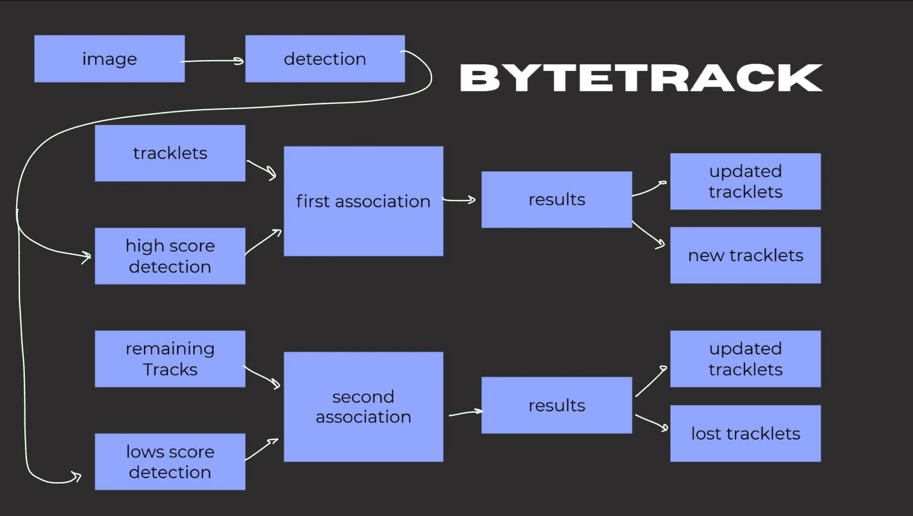

When an object is partially blocked, we call it an occlusion. In a standard basic SORT framework, that object, or track, disappears from the system. When they reappear, SORT treats them as a new person, assigning them a new ID. This leads to fragmented tracks and limits our understanding of the scene.
ByteTrack takes advantage of the idea that low-score detections can be more than just background noise. Most of the time, they are actually the objects we are looking for, just blurred or obstructed. Instead of tossing them out, ByteTrack creates a fallback for low-confidence boxes, which allows us to maintain the identity of an object even when it's hard to see.
To make this work, ByteTrack uses a two-step association process:
- Standard SORT Association: Take high-confidence detections and match them to existing tracks using a Kalman Filter to predict motion.
- Low-Confidence Association: Take the remaining unmatched tracks and compare them with low-confidence detections. If a low-score box appears where the Kalman Filter predicted the object should be, assign it back to that track.
Our Implementation
We created a complete multi-object tracking system from scratch: from raw video input to tracked objects with persistent IDs. We tested it on the MOT17 dataset.
We used NumPy, OpenCV, scipy, and matplotlib for matrix operations, video processing, and the Hungarian algorithm implementation, and visualization. We implemented everything else from scratch.
Core Modules
Our implementation is organized into several core modules:
-
Kalman Filter (
kalman_filter.py)- 8-state constant velocity model: [x, y, w, h, vx, vy, vw, vh]
- Predicts object position and size
- Updates with measurements
-
Track (
track.py)- Wraps the Kalman Filter with lifecycle management
- States: tentative → confirmed → lost
- Maintains track history and metadata
-
Tracker (
tracker.py)- SimpleTracker: Single-stage matching (for HOG without scores)
- ByteTracker: Two-stage matching with high/low confidence splits
-
Utilities (
utils.py)- IoU calculation
- Hungarian algorithm matching
- Coordinate conversions
The cycle has four stages that repeat for every frame:
- Prediction. We implemented the Kalman Filter prediction step. Each track predicts where it should be in the next frame based on its current position and velocity. An 8×8 state transition matrix is used for the constant velocity motion model.
- Detection. We wrote code to load detections from the MOT17 dataset files. Each frame contains a text file with bounding box coordinates, which we parse and format for the tracker.
- Association. This stage performs Hungarian matching. We compute the IoU matrix between all predicted track positions and detections, then find the optimal assignment between them.
- Update. For matched pairs, we update the track using the Kalman Filter update equations. Unmatched detections create new tracks, while unmatched tracks remain alive for up to 30 frames in case the object reappears.
Flowchart caption

.Our Tracking
This is a very crowded pedestrian crossing with 1,050 frames. At peak moments, there are 40+ people on screen at once. Frame 1 is straightforward, we load the detections and initialize each one as a new track with a fresh ID. From frame 2 onward, the cycle begins. We predict where each person should be based on their previous motion. We load new detections. We match predictions to detections using the Hungarian Algorithm. This repeats 1,050 times.References
[1] Y. Zhang et al., “ByteTrack: Multi-Object Tracking by Associating Every Detection Box,” 2021. Available: https://arxiv.org/pdf/2110.06864
[2] T. Ceylan, “People Detection with HOG Algorithm in Python,” Medium, Dec. 25, 2022. https://medium.com/@turgay2317/people-detection-with-hog-algorithm-in-python-4fbd42e83b46 (accessed Mar. 13, 2026).